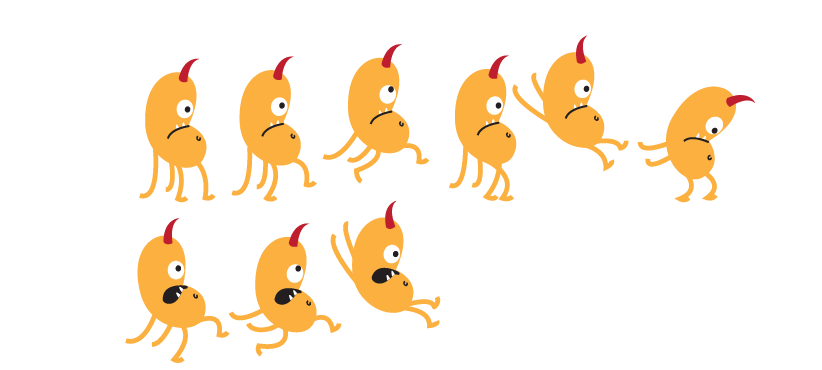
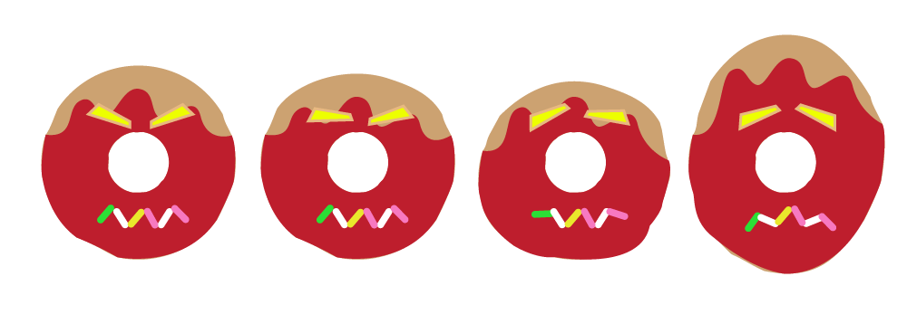
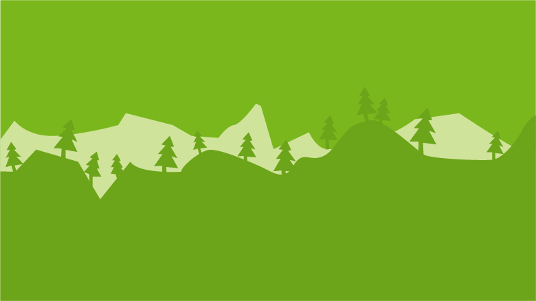

Personajes: Se jugará con “Donuton”, personaje principal el cual es un monstruo adicto a las donas e irá comiendo mientras una dona gigante lo persigue.
Música: 8-bit
Acciones: “Donuton” será el protagonista, el objetivo principal es escapar de “Dronuter”, una dona robot que se quiere vengar de Donuton por comerse sus donas. Como acciones secundarias será ir comiendo más donas que están flotando en el camino, la Dona Dorada dará un tipo de poder al personaje, le hará más rápido para dejar atrás a Dronuter. Habrán obstáculos en el camino los cuales el personaje tiene que esquivarlos saltando.
Número de jugadores: 1 jugador (Donuton)
Reglas: El jugador tiene que comer donas, entre más donas mejor porque será el puntaje del jugador. También se contará la distancia que va recorriendo, entre más acumule el jugador, mejor.
Eventos que generan nuevos eventos: Comer donas te da puntaje. Comer la Dona Dorada proporciona un tipo de poder que vuelve rápido al personaje. Al llegar a la meta se pasará a otro nivel (otro escenario).
DONUTON:
DONUTER:
El escenario se creará con Sprite Sheets y llevará un fondo diferente por cada nivel.
Juegos:
-Mario Bros
-Banana Kong
Realizado por PABLO REYES.